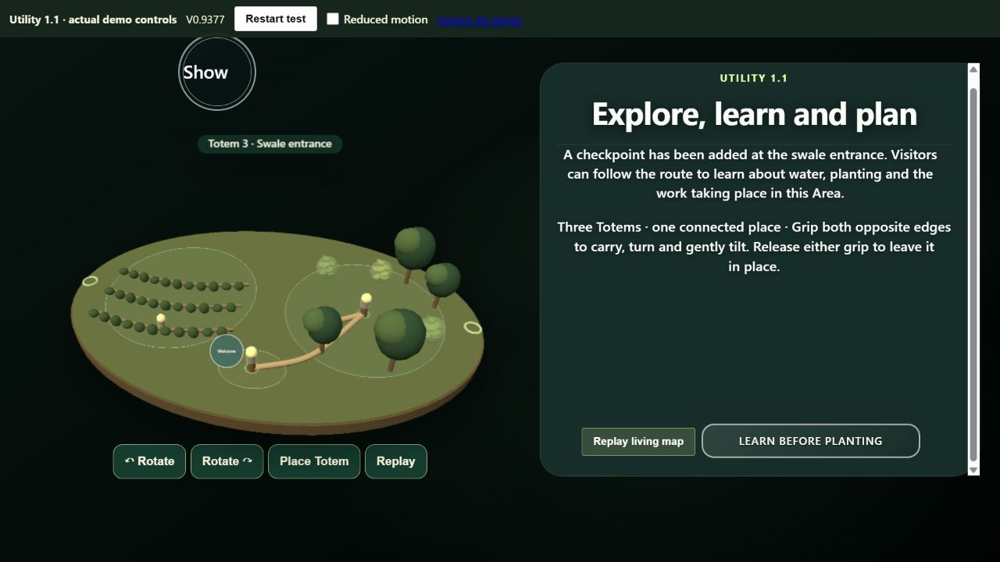

NourishlandXR · model review
IMAP V2: the Interactive Map
IMAP is the grippable 3D map used in the demo. Its terrain, Areas, Totems and Orbs appear together beside the Living Frame. The existing round disc is the visual reference; V2 also allows a square footprint and bounded size adjustment.

What the V2 model adds
The data model now generates map pages from shared-project Sites and Areas, preserves actual Totem and Orb identities, reports crowded markers, and keeps optional layout and terrain sketches separate from verified geography. Shape can be round or square, with size bounded from 75% to 130%. The terrain sketch has three direct inputs: lower a waterway, raise a hill, or form a steep contour. The demo renderer has not yet been rewired to this model.
The flat Creator planning map was retained as a separate experiment. It is not the IMAP disc.